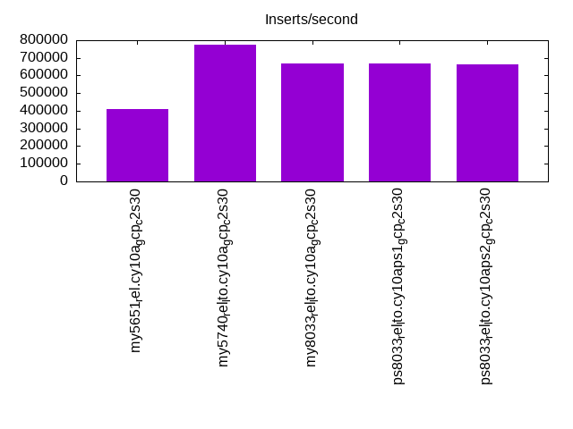
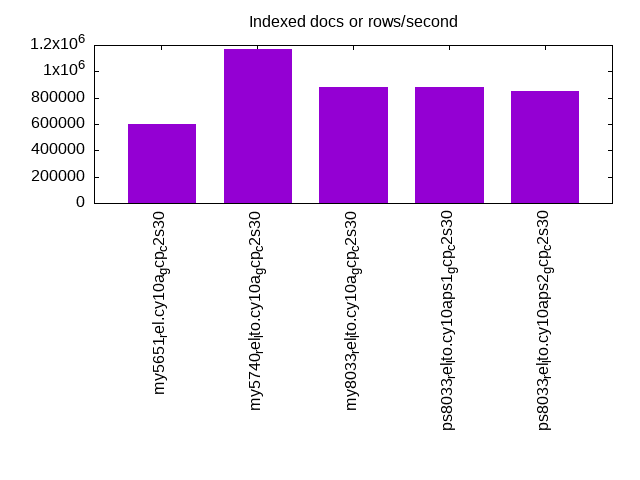
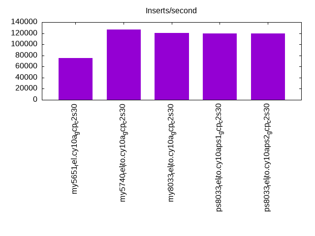
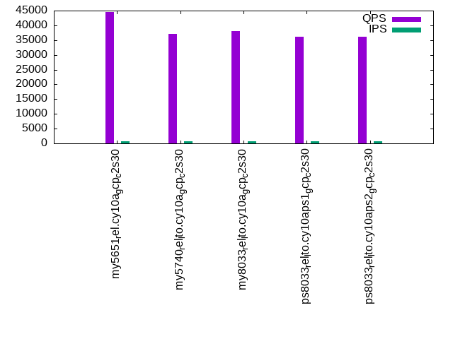
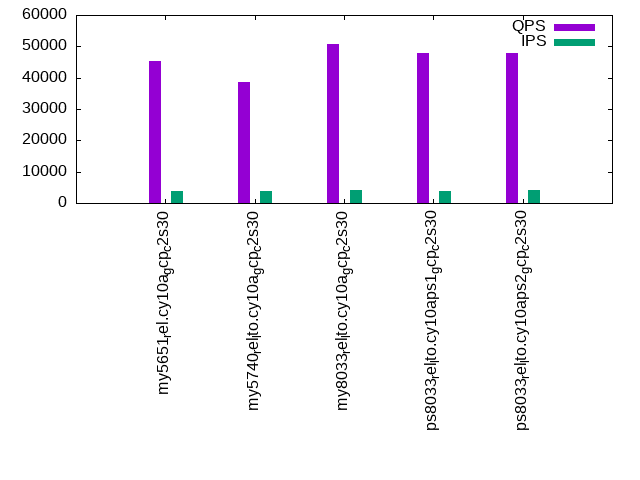
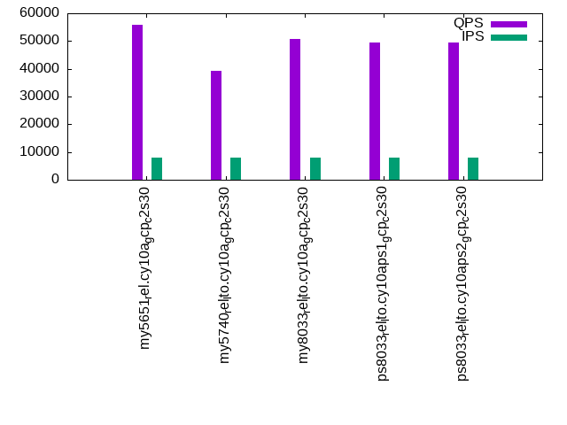

This is a report for the insert benchmark with 160M docs and 8 client(s). It is generated by scripts (bash, awk, sed) and Tufte might not be impressed. An overview of the insert benchmark is here and a short update is here. Below, by DBMS, I mean DBMS+version.config. An example is my8020.c10b40 where my means MySQL, 8020 is version 8.0.20 and c10b40 is the name for the configuration file.
The test server is a c2-standard-30 from GCP with 15 cores, hyperthreads disabled, 120G RAM, XFS + SW RAID 0 on 4 NVMe devices (1.5TB). The benchmark was run with 8 client and there were 1 or 3 connections per client (1 for queries or inserts without rate limits, 1+1 for rate limited inserts+deletes). There are 8 tables, client per table. It loads 20M rows without secondary indexes, creates secondary indexes, then inserts 200M rows with a delete per insert to avoid growing the table. It then does 3 read+write tests for 7200s each that do queries as fast as possible with 100, 500 and then 1000 inserts/second/client concurrent with the queries and 1000 deletes/second to avoid growing the table. The database is cached by InnoDB.
The tested DBMS are:
The numbers are inserts/s for l.i0 and l.i1, indexed docs (or rows) /s for l.x and queries/s for q*.2. The values are the average rate over the entire test for inserts (IPS) and queries (QPS). The range of values for IPS and QPS is split into 3 parts: bottom 25%, middle 50%, top 25%. Values in the bottom 25% have a red background, values in the top 25% have a green background and values in the middle have no color. A gray background is used for values that can be ignored because the DBMS did not sustain the target insert rate. Red backgrounds are not used when the minimum value is within 80% of the max value.
| dbms | l.i0 | l.x | l.i1 | q100.1 | q500.1 | q1000.1 |
|---|---|---|---|---|---|---|
| my5651_rel.cy10a_gcp_c2s30 | 412371 | 597388 | 75404 | 44421 | 45192 | 55777 |
| my5740_rel_lto.cy10a_gcp_c2s30 | 776699 | 1168613 | 126753 | 37036 | 38692 | 39205 |
| my8033_rel_lto.cy10a_gcp_c2s30 | 666667 | 884530 | 120782 | 38074 | 50640 | 50829 |
| ps8033_rel_lto.cy10aps1_gcp_c2s30 | 666667 | 879670 | 119922 | 36192 | 47979 | 49519 |
| ps8033_rel_lto.cy10aps2_gcp_c2s30 | 663900 | 847090 | 119859 | 36096 | 47870 | 49480 |
This table has relative throughput, throughput for the DBMS relative to the DBMS in the first line, using the absolute throughput from the previous table. Values less than 0.95 have a yellow background. Values greater than 1.05 have a blue background.
| dbms | l.i0 | l.x | l.i1 | q100.1 | q500.1 | q1000.1 |
|---|---|---|---|---|---|---|
| my5651_rel.cy10a_gcp_c2s30 | 1.00 | 1.00 | 1.00 | 1.00 | 1.00 | 1.00 |
| my5740_rel_lto.cy10a_gcp_c2s30 | 1.88 | 1.96 | 1.68 | 0.83 | 0.86 | 0.70 |
| my8033_rel_lto.cy10a_gcp_c2s30 | 1.62 | 1.48 | 1.60 | 0.86 | 1.12 | 0.91 |
| ps8033_rel_lto.cy10aps1_gcp_c2s30 | 1.62 | 1.47 | 1.59 | 0.81 | 1.06 | 0.89 |
| ps8033_rel_lto.cy10aps2_gcp_c2s30 | 1.61 | 1.42 | 1.59 | 0.81 | 1.06 | 0.89 |
This lists the average rate of inserts/s for the tests that do inserts concurrent with queries. For such tests the query rate is listed in the table above. The read+write tests are setup so that the insert rate should match the target rate every second. Cells that are not at least 95% of the target have a red background to indicate a failure to satisfy the target.
| dbms | q100.1 | q500.1 | q1000.1 |
|---|---|---|---|
| my5651_rel.cy10a_gcp_c2s30 | 752 | 3800 | 7848 |
| my5740_rel_lto.cy10a_gcp_c2s30 | 782 | 3929 | 7850 |
| my8033_rel_lto.cy10a_gcp_c2s30 | 789 | 3991 | 7984 |
| ps8033_rel_lto.cy10aps1_gcp_c2s30 | 788 | 3989 | 7984 |
| ps8033_rel_lto.cy10aps2_gcp_c2s30 | 790 | 3990 | 7984 |
| target | 800 | 4000 | 8000 |
l.i0: load without secondary indexes. Graphs for performance per 1-second interval are here.
Average throughput:
Insert response time histogram: each cell has the percentage of responses that take <= the time in the header and max is the max response time in seconds. For the max column values in the top 25% of the range have a red background and in the bottom 25% of the range have a green background. The red background is not used when the min value is within 80% of the max value.
| dbms | 256us | 1ms | 4ms | 16ms | 64ms | 256ms | 1s | 4s | 16s | gt | max |
|---|---|---|---|---|---|---|---|---|---|---|---|
| my5651_rel.cy10a_gcp_c2s30 | 2.199 | 97.506 | 0.114 | 0.168 | 0.014 | 0.195 | |||||
| my5740_rel_lto.cy10a_gcp_c2s30 | 94.406 | 5.529 | 0.031 | 0.019 | 0.015 | 0.244 | |||||
| my8033_rel_lto.cy10a_gcp_c2s30 | 8.364 | 91.556 | 0.040 | 0.026 | 0.014 | 0.232 | |||||
| ps8033_rel_lto.cy10aps1_gcp_c2s30 | 10.762 | 89.156 | 0.042 | 0.026 | 0.014 | 0.236 | |||||
| ps8033_rel_lto.cy10aps2_gcp_c2s30 | 8.208 | 91.710 | 0.041 | 0.027 | 0.014 | 0.231 |
Performance metrics for the DBMS listed above. Some are normalized by throughput, others are not. Legend for results is here.
ips qps rps rmbps wps wmbps rpq rkbpq wpi wkbpi csps cpups cspq cpupq dbgb1 dbgb2 rss maxop p50 p99 tag 412371 0 3251 12.7 550.4 73.6 0.008 0.032 0.001 0.183 84759 43.5 0.206 16 10.6 139.1 16.1 0.195 53043 42754 160m.my5651_rel.cy10a_gcp_c2s30 776699 0 0 0.0 1450.7 150.2 0.000 0.000 0.002 0.198 76832 70.3 0.099 14 10.6 139.1 17.2 0.244 107319 85407 160m.my5740_rel_lto.cy10a_gcp_c2s30 666667 0 0 0.0 1112.1 123.1 0.000 0.000 0.002 0.189 206689 72.8 0.310 16 10.6 139.1 17.2 0.232 90701 71720 160m.my8033_rel_lto.cy10a_gcp_c2s30 666667 0 0 0.0 895.9 120.3 0.000 0.000 0.001 0.185 215257 72.8 0.323 16 10.6 139.1 17.2 0.236 90634 73945 160m.ps8033_rel_lto.cy10aps1_gcp_c2s30 663900 0 0 0.0 891.4 120.8 0.000 0.000 0.001 0.186 205401 73.2 0.309 17 10.6 139.1 17.1 0.231 90301 71282 160m.ps8033_rel_lto.cy10aps2_gcp_c2s30
l.x: create secondary indexes.
Average throughput:
Performance metrics for the DBMS listed above. Some are normalized by throughput, others are not. Legend for results is here.
ips qps rps rmbps wps wmbps rpq rkbpq wpi wkbpi csps cpups cspq cpupq dbgb1 dbgb2 rss maxop p50 p99 tag 597388 0 318 1.2 7947.4 630.6 0.001 0.002 0.013 1.081 18514 39.1 0.031 10 21.7 150.2 25.9 0.001 NA NA 160m.my5651_rel.cy10a_gcp_c2s30 1168613 0 0 0.0 13965.2 1060.7 0.000 0.000 0.012 0.929 47770 37.7 0.041 5 23.6 152.1 25.2 0.031 NA NA 160m.my5740_rel_lto.cy10a_gcp_c2s30 884530 0 4451 282.9 18070.7 868.1 0.005 0.328 0.020 1.005 111178 81.1 0.126 14 23.5 152.1 26.7 0.011 NA NA 160m.my8033_rel_lto.cy10a_gcp_c2s30 879670 0 4453 282.9 17863.6 862.7 0.005 0.329 0.020 1.004 105895 82.8 0.120 14 23.5 152.1 25.8 0.004 NA NA 160m.ps8033_rel_lto.cy10aps1_gcp_c2s30 847090 0 4330 275.3 17306.8 837.4 0.005 0.333 0.020 1.012 109796 82.0 0.130 15 23.5 152.1 26.4 0.004 NA NA 160m.ps8033_rel_lto.cy10aps2_gcp_c2s30
l.i1: continue load after secondary indexes created. Graphs for performance per 1-second interval are here.
Average throughput:
Insert response time histogram: each cell has the percentage of responses that take <= the time in the header and max is the max response time in seconds. For the max column values in the top 25% of the range have a red background and in the bottom 25% of the range have a green background. The red background is not used when the min value is within 80% of the max value.
| dbms | 256us | 1ms | 4ms | 16ms | 64ms | 256ms | 1s | 4s | 16s | gt | max |
|---|---|---|---|---|---|---|---|---|---|---|---|
| my5651_rel.cy10a_gcp_c2s30 | 19.292 | 80.310 | 0.381 | 0.016 | nonzero | 0.262 | |||||
| my5740_rel_lto.cy10a_gcp_c2s30 | 84.918 | 15.016 | 0.051 | 0.016 | nonzero | 0.390 | |||||
| my8033_rel_lto.cy10a_gcp_c2s30 | 82.368 | 17.549 | 0.064 | 0.018 | 0.001 | nonzero | 1.015 | ||||
| ps8033_rel_lto.cy10aps1_gcp_c2s30 | 81.818 | 18.086 | 0.077 | 0.016 | 0.003 | 0.742 | |||||
| ps8033_rel_lto.cy10aps2_gcp_c2s30 | 81.635 | 18.276 | 0.071 | 0.018 | nonzero | 0.866 |
Delete response time histogram: each cell has the percentage of responses that take <= the time in the header and max is the max response time in seconds. For the max column values in the top 25% of the range have a red background and in the bottom 25% of the range have a green background. The red background is not used when the min value is within 80% of the max value.
| dbms | 256us | 1ms | 4ms | 16ms | 64ms | 256ms | 1s | 4s | 16s | gt | max |
|---|---|---|---|---|---|---|---|---|---|---|---|
| my5651_rel.cy10a_gcp_c2s30 | nonzero | 40.155 | 59.491 | 0.340 | 0.014 | nonzero | 0.258 | ||||
| my5740_rel_lto.cy10a_gcp_c2s30 | nonzero | 86.126 | 13.799 | 0.058 | 0.017 | nonzero | 0.405 | ||||
| my8033_rel_lto.cy10a_gcp_c2s30 | 84.289 | 15.630 | 0.066 | 0.014 | nonzero | nonzero | 1.019 | ||||
| ps8033_rel_lto.cy10aps1_gcp_c2s30 | 83.523 | 16.376 | 0.086 | 0.012 | 0.003 | 0.679 | |||||
| ps8033_rel_lto.cy10aps2_gcp_c2s30 | 83.397 | 16.515 | 0.073 | 0.015 | nonzero | 0.865 |
Performance metrics for the DBMS listed above. Some are normalized by throughput, others are not. Legend for results is here.
ips qps rps rmbps wps wmbps rpq rkbpq wpi wkbpi csps cpups cspq cpupq dbgb1 dbgb2 rss maxop p50 p99 tag 75404 0 3519 28.5 8030.7 275.3 0.047 0.387 0.107 3.738 167646 61.7 2.223 123 179.5 379.3 85.7 0.262 9490 7941 160m.my5651_rel.cy10a_gcp_c2s30 126753 0 2212 34.6 11359.1 397.8 0.017 0.279 0.090 3.213 67655 85.7 0.534 101 200.2 410.4 87.0 0.390 16089 11837 160m.my5740_rel_lto.cy10a_gcp_c2s30 120782 0 873 13.6 9359.0 324.0 0.007 0.116 0.077 2.747 169939 86.0 1.407 107 148.2 334.7 86.9 1.015 15283 11587 160m.my8033_rel_lto.cy10a_gcp_c2s30 119922 0 925 14.5 8504.1 299.7 0.008 0.123 0.071 2.559 166548 86.0 1.389 108 149.9 332.2 86.9 0.742 15183 11188 160m.ps8033_rel_lto.cy10aps1_gcp_c2s30 119859 0 914 14.3 8493.4 299.6 0.008 0.122 0.071 2.559 165056 86.1 1.377 108 149.9 333.3 86.9 0.866 15141 11587 160m.ps8033_rel_lto.cy10aps2_gcp_c2s30
q100.1: range queries with 100 insert/s per client. Graphs for performance per 1-second interval are here.
Average throughput:
Query response time histogram: each cell has the percentage of responses that take <= the time in the header and max is the max response time in seconds. For max values in the top 25% of the range have a red background and in the bottom 25% of the range have a green background. The red background is not used when the min value is within 80% of the max value.
| dbms | 256us | 1ms | 4ms | 16ms | 64ms | 256ms | 1s | 4s | 16s | gt | max |
|---|---|---|---|---|---|---|---|---|---|---|---|
| my5651_rel.cy10a_gcp_c2s30 | 97.923 | 1.912 | 0.163 | 0.003 | nonzero | nonzero | 0.256 | ||||
| my5740_rel_lto.cy10a_gcp_c2s30 | 90.271 | 8.922 | 0.804 | 0.003 | nonzero | nonzero | 0.224 | ||||
| my8033_rel_lto.cy10a_gcp_c2s30 | 91.646 | 8.300 | 0.054 | nonzero | nonzero | nonzero | 0.247 | ||||
| ps8033_rel_lto.cy10aps1_gcp_c2s30 | 86.507 | 13.380 | 0.113 | nonzero | nonzero | nonzero | 0.233 | ||||
| ps8033_rel_lto.cy10aps2_gcp_c2s30 | 86.150 | 13.756 | 0.094 | nonzero | nonzero | nonzero | 0.227 |
Insert response time histogram: each cell has the percentage of responses that take <= the time in the header and max is the max response time in seconds. For max values in the top 25% of the range have a red background and in the bottom 25% of the range have a green background. The red background is not used when the min value is within 80% of the max value.
| dbms | 256us | 1ms | 4ms | 16ms | 64ms | 256ms | 1s | 4s | 16s | gt | max |
|---|---|---|---|---|---|---|---|---|---|---|---|
| my5651_rel.cy10a_gcp_c2s30 | 95.639 | 4.324 | 0.019 | 0.018 | 0.205 | ||||||
| my5740_rel_lto.cy10a_gcp_c2s30 | 81.827 | 18.161 | 0.012 | 0.028 | |||||||
| my8033_rel_lto.cy10a_gcp_c2s30 | 95.572 | 4.416 | 0.010 | 0.001 | 0.001 | 0.457 | |||||
| ps8033_rel_lto.cy10aps1_gcp_c2s30 | 96.829 | 3.159 | 0.012 | 0.043 | |||||||
| ps8033_rel_lto.cy10aps2_gcp_c2s30 | 95.234 | 4.749 | 0.016 | 0.050 |
Delete response time histogram: each cell has the percentage of responses that take <= the time in the header and max is the max response time in seconds. For max values in the top 25% of the range have a red background and in the bottom 25% of the range have a green background. The red background is not used when the min value is within 80% of the max value.
| dbms | 256us | 1ms | 4ms | 16ms | 64ms | 256ms | 1s | 4s | 16s | gt | max |
|---|---|---|---|---|---|---|---|---|---|---|---|
| my5651_rel.cy10a_gcp_c2s30 | 96.735 | 3.242 | 0.006 | 0.016 | 0.189 | ||||||
| my5740_rel_lto.cy10a_gcp_c2s30 | 99.451 | 0.549 | 0.001 | 0.017 | |||||||
| my8033_rel_lto.cy10a_gcp_c2s30 | 96.365 | 3.627 | 0.007 | 0.001 | 0.001 | 0.457 | |||||
| ps8033_rel_lto.cy10aps1_gcp_c2s30 | 97.356 | 2.635 | 0.009 | 0.043 | |||||||
| ps8033_rel_lto.cy10aps2_gcp_c2s30 | 96.053 | 3.936 | 0.011 | 0.050 |
Performance metrics for the DBMS listed above. Some are normalized by throughput, others are not. Legend for results is here.
ips qps rps rmbps wps wmbps rpq rkbpq wpi wkbpi csps cpups cspq cpupq dbgb1 dbgb2 rss maxop p50 p99 tag 752 44421 9859 153.7 14838.0 424.6 0.222 3.543 19.731 578.226 212156 58.3 4.776 197 179.5 379.3 85.8 0.256 5961 2829 160m.my5651_rel.cy10a_gcp_c2s30 782 37036 13178 205.9 14675.6 434.9 0.356 5.693 18.760 569.213 196533 59.0 5.306 239 200.2 410.4 87.0 0.224 4827 1295 160m.my5740_rel_lto.cy10a_gcp_c2s30 789 38074 2445 38.2 7082.7 198.2 0.064 1.028 8.981 257.334 154933 70.4 4.069 277 148.2 301.9 87.0 0.247 4923 3868 160m.my8033_rel_lto.cy10a_gcp_c2s30 788 36192 2986 46.7 7248.6 208.0 0.083 1.320 9.196 270.246 154294 69.3 4.263 287 149.9 292.6 87.0 0.233 4683 2382 160m.ps8033_rel_lto.cy10aps1_gcp_c2s30 790 36096 2963 46.3 7189.8 206.7 0.082 1.313 9.106 268.059 151312 69.9 4.192 290 149.9 295.2 87.0 0.227 4667 2574 160m.ps8033_rel_lto.cy10aps2_gcp_c2s30
q500.1: range queries with 500 insert/s per client. Graphs for performance per 1-second interval are here.
Average throughput:
Query response time histogram: each cell has the percentage of responses that take <= the time in the header and max is the max response time in seconds. For max values in the top 25% of the range have a red background and in the bottom 25% of the range have a green background. The red background is not used when the min value is within 80% of the max value.
| dbms | 256us | 1ms | 4ms | 16ms | 64ms | 256ms | 1s | 4s | 16s | gt | max |
|---|---|---|---|---|---|---|---|---|---|---|---|
| my5651_rel.cy10a_gcp_c2s30 | 98.100 | 1.797 | 0.099 | 0.003 | nonzero | nonzero | nonzero | 0.257 | |||
| my5740_rel_lto.cy10a_gcp_c2s30 | 91.583 | 8.129 | 0.285 | 0.002 | nonzero | nonzero | 0.245 | ||||
| my8033_rel_lto.cy10a_gcp_c2s30 | 99.235 | 0.757 | 0.008 | 0.001 | nonzero | 0.022 | |||||
| ps8033_rel_lto.cy10aps1_gcp_c2s30 | 98.685 | 1.306 | 0.008 | 0.001 | nonzero | 0.056 | |||||
| ps8033_rel_lto.cy10aps2_gcp_c2s30 | 98.682 | 1.307 | 0.010 | 0.002 | nonzero | 0.026 |
Insert response time histogram: each cell has the percentage of responses that take <= the time in the header and max is the max response time in seconds. For max values in the top 25% of the range have a red background and in the bottom 25% of the range have a green background. The red background is not used when the min value is within 80% of the max value.
| dbms | 256us | 1ms | 4ms | 16ms | 64ms | 256ms | 1s | 4s | 16s | gt | max |
|---|---|---|---|---|---|---|---|---|---|---|---|
| my5651_rel.cy10a_gcp_c2s30 | 96.598 | 3.359 | 0.042 | 0.040 | |||||||
| my5740_rel_lto.cy10a_gcp_c2s30 | 99.288 | 0.686 | 0.026 | 0.035 | |||||||
| my8033_rel_lto.cy10a_gcp_c2s30 | 97.897 | 2.072 | 0.030 | 0.001 | 0.177 | ||||||
| ps8033_rel_lto.cy10aps1_gcp_c2s30 | 96.464 | 3.489 | 0.046 | nonzero | 0.076 | ||||||
| ps8033_rel_lto.cy10aps2_gcp_c2s30 | 93.661 | 6.181 | 0.158 | 0.036 |
Delete response time histogram: each cell has the percentage of responses that take <= the time in the header and max is the max response time in seconds. For max values in the top 25% of the range have a red background and in the bottom 25% of the range have a green background. The red background is not used when the min value is within 80% of the max value.
| dbms | 256us | 1ms | 4ms | 16ms | 64ms | 256ms | 1s | 4s | 16s | gt | max |
|---|---|---|---|---|---|---|---|---|---|---|---|
| my5651_rel.cy10a_gcp_c2s30 | 97.931 | 2.064 | 0.005 | 0.038 | |||||||
| my5740_rel_lto.cy10a_gcp_c2s30 | 99.632 | 0.363 | 0.005 | 0.026 | |||||||
| my8033_rel_lto.cy10a_gcp_c2s30 | 98.569 | 1.410 | 0.020 | 0.001 | 0.177 | ||||||
| ps8033_rel_lto.cy10aps1_gcp_c2s30 | 97.613 | 2.357 | 0.030 | nonzero | 0.082 | ||||||
| ps8033_rel_lto.cy10aps2_gcp_c2s30 | 95.090 | 4.792 | 0.118 | 0.034 |
Performance metrics for the DBMS listed above. Some are normalized by throughput, others are not. Legend for results is here.
ips qps rps rmbps wps wmbps rpq rkbpq wpi wkbpi csps cpups cspq cpupq dbgb1 dbgb2 rss maxop p50 p99 tag 3800 45192 7653 118.0 16171.8 483.7 0.169 2.674 4.255 130.335 206121 63.0 4.561 209 179.5 379.3 85.8 0.257 5900 5082 160m.my5651_rel.cy10a_gcp_c2s30 3929 38692 10756 168.1 13956.3 417.2 0.278 4.448 3.552 108.722 189641 63.9 4.901 248 200.2 410.4 87.0 0.245 4938 4093 160m.my5740_rel_lto.cy10a_gcp_c2s30 3991 50640 128 2.0 994.2 30.6 0.003 0.040 0.249 7.842 196716 58.6 3.885 174 148.2 277.3 87.0 0.022 6511 5101 160m.my8033_rel_lto.cy10a_gcp_c2s30 3989 47979 221 3.5 1033.9 32.8 0.005 0.074 0.259 8.407 184380 60.7 3.843 190 149.9 279.0 87.0 0.056 6313 4907 160m.ps8033_rel_lto.cy10aps1_gcp_c2s30 3990 47870 198 3.1 994.0 31.3 0.004 0.066 0.249 8.033 184501 60.0 3.854 188 149.9 279.0 87.0 0.026 6265 4891 160m.ps8033_rel_lto.cy10aps2_gcp_c2s30
q1000.1: range queries with 1000 insert/s per client. Graphs for performance per 1-second interval are here.
Average throughput:
Query response time histogram: each cell has the percentage of responses that take <= the time in the header and max is the max response time in seconds. For max values in the top 25% of the range have a red background and in the bottom 25% of the range have a green background. The red background is not used when the min value is within 80% of the max value.
| dbms | 256us | 1ms | 4ms | 16ms | 64ms | 256ms | 1s | 4s | 16s | gt | max |
|---|---|---|---|---|---|---|---|---|---|---|---|
| my5651_rel.cy10a_gcp_c2s30 | 99.150 | 0.752 | 0.084 | 0.013 | 0.001 | nonzero | 0.191 | ||||
| my5740_rel_lto.cy10a_gcp_c2s30 | 93.047 | 6.810 | 0.141 | 0.002 | 0.001 | nonzero | nonzero | 0.311 | |||
| my8033_rel_lto.cy10a_gcp_c2s30 | 99.378 | 0.592 | 0.026 | 0.004 | nonzero | 0.031 | |||||
| ps8033_rel_lto.cy10aps1_gcp_c2s30 | 99.184 | 0.783 | 0.029 | 0.004 | nonzero | 0.044 | |||||
| ps8033_rel_lto.cy10aps2_gcp_c2s30 | 99.188 | 0.778 | 0.030 | 0.004 | nonzero | 0.030 |
Insert response time histogram: each cell has the percentage of responses that take <= the time in the header and max is the max response time in seconds. For max values in the top 25% of the range have a red background and in the bottom 25% of the range have a green background. The red background is not used when the min value is within 80% of the max value.
| dbms | 256us | 1ms | 4ms | 16ms | 64ms | 256ms | 1s | 4s | 16s | gt | max |
|---|---|---|---|---|---|---|---|---|---|---|---|
| my5651_rel.cy10a_gcp_c2s30 | nonzero | 91.700 | 8.240 | 0.060 | 0.048 | ||||||
| my5740_rel_lto.cy10a_gcp_c2s30 | 99.251 | 0.714 | 0.035 | 0.052 | |||||||
| my8033_rel_lto.cy10a_gcp_c2s30 | 87.421 | 12.093 | 0.485 | 0.038 | |||||||
| ps8033_rel_lto.cy10aps1_gcp_c2s30 | 85.841 | 13.525 | 0.634 | 0.047 | |||||||
| ps8033_rel_lto.cy10aps2_gcp_c2s30 | 85.130 | 14.299 | 0.572 | 0.046 |
Delete response time histogram: each cell has the percentage of responses that take <= the time in the header and max is the max response time in seconds. For max values in the top 25% of the range have a red background and in the bottom 25% of the range have a green background. The red background is not used when the min value is within 80% of the max value.
| dbms | 256us | 1ms | 4ms | 16ms | 64ms | 256ms | 1s | 4s | 16s | gt | max |
|---|---|---|---|---|---|---|---|---|---|---|---|
| my5651_rel.cy10a_gcp_c2s30 | 0.083 | 94.648 | 5.251 | 0.018 | 0.032 | ||||||
| my5740_rel_lto.cy10a_gcp_c2s30 | 99.587 | 0.408 | 0.006 | 0.035 | |||||||
| my8033_rel_lto.cy10a_gcp_c2s30 | 89.934 | 9.702 | 0.364 | 0.048 | |||||||
| ps8033_rel_lto.cy10aps1_gcp_c2s30 | 88.365 | 11.143 | 0.492 | 0.050 | |||||||
| ps8033_rel_lto.cy10aps2_gcp_c2s30 | 87.847 | 11.726 | 0.427 | 0.039 |
Performance metrics for the DBMS listed above. Some are normalized by throughput, others are not. Legend for results is here.
ips qps rps rmbps wps wmbps rpq rkbpq wpi wkbpi csps cpups cspq cpupq dbgb1 dbgb2 rss maxop p50 p99 tag 7848 55777 1407 18.9 4665.1 145.4 0.025 0.348 0.594 18.965 199465 68.5 3.576 184 179.5 379.3 85.8 0.191 6952 5850 160m.my5651_rel.cy10a_gcp_c2s30 7850 39205 8521 133.1 13328.0 398.4 0.217 3.478 1.698 51.976 179415 67.8 4.576 259 200.2 410.4 86.9 0.311 5034 4123 160m.my5740_rel_lto.cy10a_gcp_c2s30 7984 50829 40 0.6 780.2 25.0 0.001 0.013 0.098 3.200 194464 59.0 3.826 174 148.2 277.3 87.0 0.031 6363 6258 160m.my8033_rel_lto.cy10a_gcp_c2s30 7984 49519 40 0.6 487.7 16.9 0.001 0.013 0.061 2.164 188827 59.0 3.813 179 149.9 279.0 87.0 0.044 6201 6105 160m.ps8033_rel_lto.cy10aps1_gcp_c2s30 7984 49480 40 0.6 486.5 16.9 0.001 0.013 0.061 2.163 188710 58.8 3.814 178 149.9 279.0 87.0 0.030 6191 6087 160m.ps8033_rel_lto.cy10aps2_gcp_c2s30
l.i0: load without secondary indexes
Performance metrics for all DBMS, not just the ones listed above. Some are normalized by throughput, others are not. Legend for results is here.
ips qps rps rmbps wps wmbps rpq rkbpq wpi wkbpi csps cpups cspq cpupq dbgb1 dbgb2 rss maxop p50 p99 tag 412371 0 3251 12.7 550.4 73.6 0.008 0.032 0.001 0.183 84759 43.5 0.206 16 10.6 139.1 16.1 0.195 53043 42754 160m.my5651_rel.cy10a_gcp_c2s30 776699 0 0 0.0 1450.7 150.2 0.000 0.000 0.002 0.198 76832 70.3 0.099 14 10.6 139.1 17.2 0.244 107319 85407 160m.my5740_rel_lto.cy10a_gcp_c2s30 666667 0 0 0.0 1112.1 123.1 0.000 0.000 0.002 0.189 206689 72.8 0.310 16 10.6 139.1 17.2 0.232 90701 71720 160m.my8033_rel_lto.cy10a_gcp_c2s30 666667 0 0 0.0 895.9 120.3 0.000 0.000 0.001 0.185 215257 72.8 0.323 16 10.6 139.1 17.2 0.236 90634 73945 160m.ps8033_rel_lto.cy10aps1_gcp_c2s30 663900 0 0 0.0 891.4 120.8 0.000 0.000 0.001 0.186 205401 73.2 0.309 17 10.6 139.1 17.1 0.231 90301 71282 160m.ps8033_rel_lto.cy10aps2_gcp_c2s30
l.x: create secondary indexes
Performance metrics for all DBMS, not just the ones listed above. Some are normalized by throughput, others are not. Legend for results is here.
ips qps rps rmbps wps wmbps rpq rkbpq wpi wkbpi csps cpups cspq cpupq dbgb1 dbgb2 rss maxop p50 p99 tag 597388 0 318 1.2 7947.4 630.6 0.001 0.002 0.013 1.081 18514 39.1 0.031 10 21.7 150.2 25.9 0.001 NA NA 160m.my5651_rel.cy10a_gcp_c2s30 1168613 0 0 0.0 13965.2 1060.7 0.000 0.000 0.012 0.929 47770 37.7 0.041 5 23.6 152.1 25.2 0.031 NA NA 160m.my5740_rel_lto.cy10a_gcp_c2s30 884530 0 4451 282.9 18070.7 868.1 0.005 0.328 0.020 1.005 111178 81.1 0.126 14 23.5 152.1 26.7 0.011 NA NA 160m.my8033_rel_lto.cy10a_gcp_c2s30 879670 0 4453 282.9 17863.6 862.7 0.005 0.329 0.020 1.004 105895 82.8 0.120 14 23.5 152.1 25.8 0.004 NA NA 160m.ps8033_rel_lto.cy10aps1_gcp_c2s30 847090 0 4330 275.3 17306.8 837.4 0.005 0.333 0.020 1.012 109796 82.0 0.130 15 23.5 152.1 26.4 0.004 NA NA 160m.ps8033_rel_lto.cy10aps2_gcp_c2s30
l.i1: continue load after secondary indexes created
Performance metrics for all DBMS, not just the ones listed above. Some are normalized by throughput, others are not. Legend for results is here.
ips qps rps rmbps wps wmbps rpq rkbpq wpi wkbpi csps cpups cspq cpupq dbgb1 dbgb2 rss maxop p50 p99 tag 75404 0 3519 28.5 8030.7 275.3 0.047 0.387 0.107 3.738 167646 61.7 2.223 123 179.5 379.3 85.7 0.262 9490 7941 160m.my5651_rel.cy10a_gcp_c2s30 126753 0 2212 34.6 11359.1 397.8 0.017 0.279 0.090 3.213 67655 85.7 0.534 101 200.2 410.4 87.0 0.390 16089 11837 160m.my5740_rel_lto.cy10a_gcp_c2s30 120782 0 873 13.6 9359.0 324.0 0.007 0.116 0.077 2.747 169939 86.0 1.407 107 148.2 334.7 86.9 1.015 15283 11587 160m.my8033_rel_lto.cy10a_gcp_c2s30 119922 0 925 14.5 8504.1 299.7 0.008 0.123 0.071 2.559 166548 86.0 1.389 108 149.9 332.2 86.9 0.742 15183 11188 160m.ps8033_rel_lto.cy10aps1_gcp_c2s30 119859 0 914 14.3 8493.4 299.6 0.008 0.122 0.071 2.559 165056 86.1 1.377 108 149.9 333.3 86.9 0.866 15141 11587 160m.ps8033_rel_lto.cy10aps2_gcp_c2s30
q100.1: range queries with 100 insert/s per client
Performance metrics for all DBMS, not just the ones listed above. Some are normalized by throughput, others are not. Legend for results is here.
ips qps rps rmbps wps wmbps rpq rkbpq wpi wkbpi csps cpups cspq cpupq dbgb1 dbgb2 rss maxop p50 p99 tag 752 44421 9859 153.7 14838.0 424.6 0.222 3.543 19.731 578.226 212156 58.3 4.776 197 179.5 379.3 85.8 0.256 5961 2829 160m.my5651_rel.cy10a_gcp_c2s30 782 37036 13178 205.9 14675.6 434.9 0.356 5.693 18.760 569.213 196533 59.0 5.306 239 200.2 410.4 87.0 0.224 4827 1295 160m.my5740_rel_lto.cy10a_gcp_c2s30 789 38074 2445 38.2 7082.7 198.2 0.064 1.028 8.981 257.334 154933 70.4 4.069 277 148.2 301.9 87.0 0.247 4923 3868 160m.my8033_rel_lto.cy10a_gcp_c2s30 788 36192 2986 46.7 7248.6 208.0 0.083 1.320 9.196 270.246 154294 69.3 4.263 287 149.9 292.6 87.0 0.233 4683 2382 160m.ps8033_rel_lto.cy10aps1_gcp_c2s30 790 36096 2963 46.3 7189.8 206.7 0.082 1.313 9.106 268.059 151312 69.9 4.192 290 149.9 295.2 87.0 0.227 4667 2574 160m.ps8033_rel_lto.cy10aps2_gcp_c2s30
q500.1: range queries with 500 insert/s per client
Performance metrics for all DBMS, not just the ones listed above. Some are normalized by throughput, others are not. Legend for results is here.
ips qps rps rmbps wps wmbps rpq rkbpq wpi wkbpi csps cpups cspq cpupq dbgb1 dbgb2 rss maxop p50 p99 tag 3800 45192 7653 118.0 16171.8 483.7 0.169 2.674 4.255 130.335 206121 63.0 4.561 209 179.5 379.3 85.8 0.257 5900 5082 160m.my5651_rel.cy10a_gcp_c2s30 3929 38692 10756 168.1 13956.3 417.2 0.278 4.448 3.552 108.722 189641 63.9 4.901 248 200.2 410.4 87.0 0.245 4938 4093 160m.my5740_rel_lto.cy10a_gcp_c2s30 3991 50640 128 2.0 994.2 30.6 0.003 0.040 0.249 7.842 196716 58.6 3.885 174 148.2 277.3 87.0 0.022 6511 5101 160m.my8033_rel_lto.cy10a_gcp_c2s30 3989 47979 221 3.5 1033.9 32.8 0.005 0.074 0.259 8.407 184380 60.7 3.843 190 149.9 279.0 87.0 0.056 6313 4907 160m.ps8033_rel_lto.cy10aps1_gcp_c2s30 3990 47870 198 3.1 994.0 31.3 0.004 0.066 0.249 8.033 184501 60.0 3.854 188 149.9 279.0 87.0 0.026 6265 4891 160m.ps8033_rel_lto.cy10aps2_gcp_c2s30
q1000.1: range queries with 1000 insert/s per client
Performance metrics for all DBMS, not just the ones listed above. Some are normalized by throughput, others are not. Legend for results is here.
ips qps rps rmbps wps wmbps rpq rkbpq wpi wkbpi csps cpups cspq cpupq dbgb1 dbgb2 rss maxop p50 p99 tag 7848 55777 1407 18.9 4665.1 145.4 0.025 0.348 0.594 18.965 199465 68.5 3.576 184 179.5 379.3 85.8 0.191 6952 5850 160m.my5651_rel.cy10a_gcp_c2s30 7850 39205 8521 133.1 13328.0 398.4 0.217 3.478 1.698 51.976 179415 67.8 4.576 259 200.2 410.4 86.9 0.311 5034 4123 160m.my5740_rel_lto.cy10a_gcp_c2s30 7984 50829 40 0.6 780.2 25.0 0.001 0.013 0.098 3.200 194464 59.0 3.826 174 148.2 277.3 87.0 0.031 6363 6258 160m.my8033_rel_lto.cy10a_gcp_c2s30 7984 49519 40 0.6 487.7 16.9 0.001 0.013 0.061 2.164 188827 59.0 3.813 179 149.9 279.0 87.0 0.044 6201 6105 160m.ps8033_rel_lto.cy10aps1_gcp_c2s30 7984 49480 40 0.6 486.5 16.9 0.001 0.013 0.061 2.163 188710 58.8 3.814 178 149.9 279.0 87.0 0.030 6191 6087 160m.ps8033_rel_lto.cy10aps2_gcp_c2s30
Insert response time histogram
256us 1ms 4ms 16ms 64ms 256ms 1s 4s 16s gt max tag 0.000 2.199 97.506 0.114 0.168 0.014 0.000 0.000 0.000 0.000 0.195 my5651_rel.cy10a_gcp_c2s30 0.000 94.406 5.529 0.031 0.019 0.015 0.000 0.000 0.000 0.000 0.244 my5740_rel_lto.cy10a_gcp_c2s30 0.000 8.364 91.556 0.040 0.026 0.014 0.000 0.000 0.000 0.000 0.232 my8033_rel_lto.cy10a_gcp_c2s30 0.000 10.762 89.156 0.042 0.026 0.014 0.000 0.000 0.000 0.000 0.236 ps8033_rel_lto.cy10aps1_gcp_c2s30 0.000 8.208 91.710 0.041 0.027 0.014 0.000 0.000 0.000 0.000 0.231 ps8033_rel_lto.cy10aps2_gcp_c2s30
TODO - determine whether there is data for create index response time
Insert response time histogram
256us 1ms 4ms 16ms 64ms 256ms 1s 4s 16s gt max tag 0.000 0.000 19.292 80.310 0.381 0.016 nonzero 0.000 0.000 0.000 0.262 my5651_rel.cy10a_gcp_c2s30 0.000 0.000 84.918 15.016 0.051 0.016 nonzero 0.000 0.000 0.000 0.390 my5740_rel_lto.cy10a_gcp_c2s30 0.000 0.000 82.368 17.549 0.064 0.018 0.001 nonzero 0.000 0.000 1.015 my8033_rel_lto.cy10a_gcp_c2s30 0.000 0.000 81.818 18.086 0.077 0.016 0.003 0.000 0.000 0.000 0.742 ps8033_rel_lto.cy10aps1_gcp_c2s30 0.000 0.000 81.635 18.276 0.071 0.018 nonzero 0.000 0.000 0.000 0.866 ps8033_rel_lto.cy10aps2_gcp_c2s30
Delete response time histogram
256us 1ms 4ms 16ms 64ms 256ms 1s 4s 16s gt max tag 0.000 nonzero 40.155 59.491 0.340 0.014 nonzero 0.000 0.000 0.000 0.258 my5651_rel.cy10a_gcp_c2s30 0.000 nonzero 86.126 13.799 0.058 0.017 nonzero 0.000 0.000 0.000 0.405 my5740_rel_lto.cy10a_gcp_c2s30 0.000 0.000 84.289 15.630 0.066 0.014 nonzero nonzero 0.000 0.000 1.019 my8033_rel_lto.cy10a_gcp_c2s30 0.000 0.000 83.523 16.376 0.086 0.012 0.003 0.000 0.000 0.000 0.679 ps8033_rel_lto.cy10aps1_gcp_c2s30 0.000 0.000 83.397 16.515 0.073 0.015 nonzero 0.000 0.000 0.000 0.865 ps8033_rel_lto.cy10aps2_gcp_c2s30
Query response time histogram
256us 1ms 4ms 16ms 64ms 256ms 1s 4s 16s gt max tag 97.923 1.912 0.163 0.003 nonzero nonzero 0.000 0.000 0.000 0.000 0.256 my5651_rel.cy10a_gcp_c2s30 90.271 8.922 0.804 0.003 nonzero nonzero 0.000 0.000 0.000 0.000 0.224 my5740_rel_lto.cy10a_gcp_c2s30 91.646 8.300 0.054 nonzero nonzero nonzero 0.000 0.000 0.000 0.000 0.247 my8033_rel_lto.cy10a_gcp_c2s30 86.507 13.380 0.113 nonzero nonzero nonzero 0.000 0.000 0.000 0.000 0.233 ps8033_rel_lto.cy10aps1_gcp_c2s30 86.150 13.756 0.094 nonzero nonzero nonzero 0.000 0.000 0.000 0.000 0.227 ps8033_rel_lto.cy10aps2_gcp_c2s30
Insert response time histogram
256us 1ms 4ms 16ms 64ms 256ms 1s 4s 16s gt max tag 0.000 0.000 95.639 4.324 0.019 0.018 0.000 0.000 0.000 0.000 0.205 my5651_rel.cy10a_gcp_c2s30 0.000 0.000 81.827 18.161 0.012 0.000 0.000 0.000 0.000 0.000 0.028 my5740_rel_lto.cy10a_gcp_c2s30 0.000 0.000 95.572 4.416 0.010 0.001 0.001 0.000 0.000 0.000 0.457 my8033_rel_lto.cy10a_gcp_c2s30 0.000 0.000 96.829 3.159 0.012 0.000 0.000 0.000 0.000 0.000 0.043 ps8033_rel_lto.cy10aps1_gcp_c2s30 0.000 0.000 95.234 4.749 0.016 0.000 0.000 0.000 0.000 0.000 0.050 ps8033_rel_lto.cy10aps2_gcp_c2s30
Delete response time histogram
256us 1ms 4ms 16ms 64ms 256ms 1s 4s 16s gt max tag 0.000 0.000 96.735 3.242 0.006 0.016 0.000 0.000 0.000 0.000 0.189 my5651_rel.cy10a_gcp_c2s30 0.000 0.000 99.451 0.549 0.001 0.000 0.000 0.000 0.000 0.000 0.017 my5740_rel_lto.cy10a_gcp_c2s30 0.000 0.000 96.365 3.627 0.007 0.001 0.001 0.000 0.000 0.000 0.457 my8033_rel_lto.cy10a_gcp_c2s30 0.000 0.000 97.356 2.635 0.009 0.000 0.000 0.000 0.000 0.000 0.043 ps8033_rel_lto.cy10aps1_gcp_c2s30 0.000 0.000 96.053 3.936 0.011 0.000 0.000 0.000 0.000 0.000 0.050 ps8033_rel_lto.cy10aps2_gcp_c2s30
Query response time histogram
256us 1ms 4ms 16ms 64ms 256ms 1s 4s 16s gt max tag 98.100 1.797 0.099 0.003 nonzero nonzero nonzero 0.000 0.000 0.000 0.257 my5651_rel.cy10a_gcp_c2s30 91.583 8.129 0.285 0.002 nonzero nonzero 0.000 0.000 0.000 0.000 0.245 my5740_rel_lto.cy10a_gcp_c2s30 99.235 0.757 0.008 0.001 nonzero 0.000 0.000 0.000 0.000 0.000 0.022 my8033_rel_lto.cy10a_gcp_c2s30 98.685 1.306 0.008 0.001 nonzero 0.000 0.000 0.000 0.000 0.000 0.056 ps8033_rel_lto.cy10aps1_gcp_c2s30 98.682 1.307 0.010 0.002 nonzero 0.000 0.000 0.000 0.000 0.000 0.026 ps8033_rel_lto.cy10aps2_gcp_c2s30
Insert response time histogram
256us 1ms 4ms 16ms 64ms 256ms 1s 4s 16s gt max tag 0.000 0.000 96.598 3.359 0.042 0.000 0.000 0.000 0.000 0.000 0.040 my5651_rel.cy10a_gcp_c2s30 0.000 0.000 99.288 0.686 0.026 0.000 0.000 0.000 0.000 0.000 0.035 my5740_rel_lto.cy10a_gcp_c2s30 0.000 0.000 97.897 2.072 0.030 0.001 0.000 0.000 0.000 0.000 0.177 my8033_rel_lto.cy10a_gcp_c2s30 0.000 0.000 96.464 3.489 0.046 nonzero 0.000 0.000 0.000 0.000 0.076 ps8033_rel_lto.cy10aps1_gcp_c2s30 0.000 0.000 93.661 6.181 0.158 0.000 0.000 0.000 0.000 0.000 0.036 ps8033_rel_lto.cy10aps2_gcp_c2s30
Delete response time histogram
256us 1ms 4ms 16ms 64ms 256ms 1s 4s 16s gt max tag 0.000 0.000 97.931 2.064 0.005 0.000 0.000 0.000 0.000 0.000 0.038 my5651_rel.cy10a_gcp_c2s30 0.000 0.000 99.632 0.363 0.005 0.000 0.000 0.000 0.000 0.000 0.026 my5740_rel_lto.cy10a_gcp_c2s30 0.000 0.000 98.569 1.410 0.020 0.001 0.000 0.000 0.000 0.000 0.177 my8033_rel_lto.cy10a_gcp_c2s30 0.000 0.000 97.613 2.357 0.030 nonzero 0.000 0.000 0.000 0.000 0.082 ps8033_rel_lto.cy10aps1_gcp_c2s30 0.000 0.000 95.090 4.792 0.118 0.000 0.000 0.000 0.000 0.000 0.034 ps8033_rel_lto.cy10aps2_gcp_c2s30
Query response time histogram
256us 1ms 4ms 16ms 64ms 256ms 1s 4s 16s gt max tag 99.150 0.752 0.084 0.013 0.001 nonzero 0.000 0.000 0.000 0.000 0.191 my5651_rel.cy10a_gcp_c2s30 93.047 6.810 0.141 0.002 0.001 nonzero nonzero 0.000 0.000 0.000 0.311 my5740_rel_lto.cy10a_gcp_c2s30 99.378 0.592 0.026 0.004 nonzero 0.000 0.000 0.000 0.000 0.000 0.031 my8033_rel_lto.cy10a_gcp_c2s30 99.184 0.783 0.029 0.004 nonzero 0.000 0.000 0.000 0.000 0.000 0.044 ps8033_rel_lto.cy10aps1_gcp_c2s30 99.188 0.778 0.030 0.004 nonzero 0.000 0.000 0.000 0.000 0.000 0.030 ps8033_rel_lto.cy10aps2_gcp_c2s30
Insert response time histogram
256us 1ms 4ms 16ms 64ms 256ms 1s 4s 16s gt max tag 0.000 nonzero 91.700 8.240 0.060 0.000 0.000 0.000 0.000 0.000 0.048 my5651_rel.cy10a_gcp_c2s30 0.000 0.000 99.251 0.714 0.035 0.000 0.000 0.000 0.000 0.000 0.052 my5740_rel_lto.cy10a_gcp_c2s30 0.000 0.000 87.421 12.093 0.485 0.000 0.000 0.000 0.000 0.000 0.038 my8033_rel_lto.cy10a_gcp_c2s30 0.000 0.000 85.841 13.525 0.634 0.000 0.000 0.000 0.000 0.000 0.047 ps8033_rel_lto.cy10aps1_gcp_c2s30 0.000 0.000 85.130 14.299 0.572 0.000 0.000 0.000 0.000 0.000 0.046 ps8033_rel_lto.cy10aps2_gcp_c2s30
Delete response time histogram
256us 1ms 4ms 16ms 64ms 256ms 1s 4s 16s gt max tag 0.000 0.083 94.648 5.251 0.018 0.000 0.000 0.000 0.000 0.000 0.032 my5651_rel.cy10a_gcp_c2s30 0.000 0.000 99.587 0.408 0.006 0.000 0.000 0.000 0.000 0.000 0.035 my5740_rel_lto.cy10a_gcp_c2s30 0.000 0.000 89.934 9.702 0.364 0.000 0.000 0.000 0.000 0.000 0.048 my8033_rel_lto.cy10a_gcp_c2s30 0.000 0.000 88.365 11.143 0.492 0.000 0.000 0.000 0.000 0.000 0.050 ps8033_rel_lto.cy10aps1_gcp_c2s30 0.000 0.000 87.847 11.726 0.427 0.000 0.000 0.000 0.000 0.000 0.039 ps8033_rel_lto.cy10aps2_gcp_c2s30